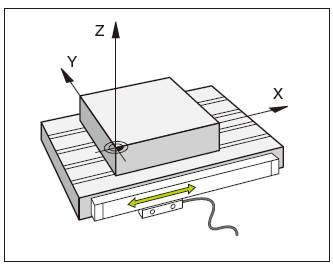
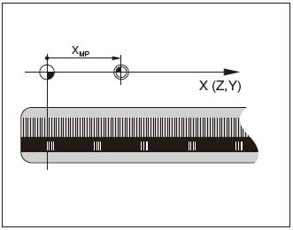
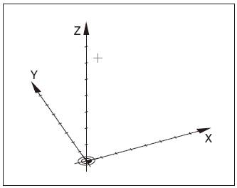
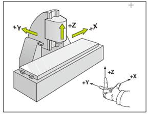
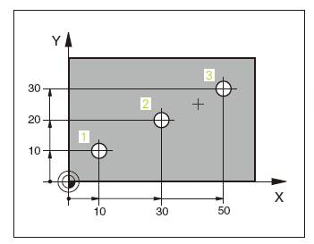
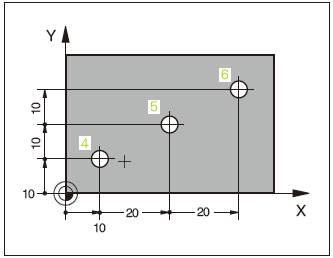
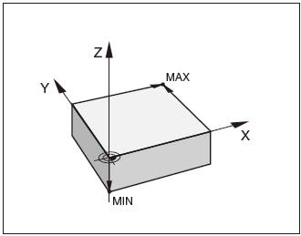
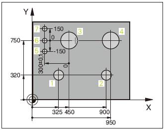

| 基础知识 |
 参考系统   使用铣床时，刀具运动是相对笛卡尔坐标系，右图所示为描述机床轴方向的笛卡儿坐标系。右图显示了用+右手规则+记忆三个轴的方向，中指指向 从工作朝向刀具的刀具轴（Z轴）正方向，拇指指向X轴正方向：食指指向Y轴正方向。 iTNC 530最多可控制9个轴。U、V和W为复制线性轴， 它们分别平行于X、Y、Z轴。旋转轴为A、B和C。右下图所示为主坐标轴与辅助线性轴和旋转轴的对应关系。  工件的绝对与增量位置 工件绝对位置 绝对坐标是相对（原）坐标系统原点的位置坐标值。工件上的每个位置都唯一地由其绝对坐标确定。 例1：用绝对坐标标注孔的位置 孔1：X=10mm Y=10mm 孔2：X=30mm Y=20mm 孔3：X=50mm Y=30mm  工件增量位置 增量坐标是指相对刀具的上一个编程名义位置，这个位置被用作相对（虚拟）原点。如用增量坐标来编写零件程序，刀具将按前一位置与后一位置间的距离来运动。这也称作链尺寸。 如要用增量坐标编程一个位置，需在轴前输入前缀"I" 例2：用增量坐标孔注孔的位置 孔4的绝对坐标 X=10mm Y=10mm 孔5，相对4 X=20mm Y=10mm 孔6，相对5 X=20mm Y=10mm  设置原点  举例 工件图纸上的空（1-4）尺寸为相对X=0 Y=0坐标的绝对原点。孔（5-7）的尺寸为相对绝对坐标X=450，Y=750的相对原点。用DATUM SHIFT（原点平移） 循环可以临时将原点设置在位置X=450，Y=750处，使编程孔（5-7）时不涉及其他计算。  |